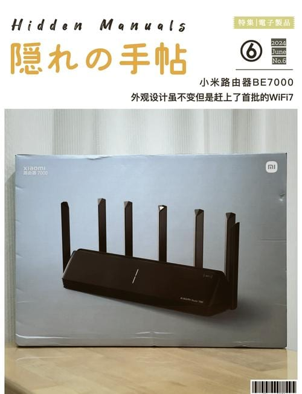

小米路由器 BE7000

小米首款 Wi-Fi 7 旗舰路由器之一，BE7000 无线速率、2.5G 网口与高通平台的组合，把 Wi-Fi 7 的价格拉进主流区间，适合想低成本尝鲜新协议的家庭用户。
客观评测
小米路由器 BE7000 搭载高通四核平台，双频 BE7000 无线规格，支持 Wi-Fi 7 的 MLO、4K QAM 等新特性，配备 1 个 2.5G 网口与 3 个千兆网口。实测近距离无线速率表现优秀，5GHz 频段吞吐在同价位领先，穿墙后速率衰减属正常水平。米家 App 上手简单，智能家居设备可免密入网。需要注意的是 2.5G 网口数量有限，且 Wi-Fi 7 的完整体验还需终端设备配合。
主观点评
用不到旗舰路由一半的价格换一张 Wi-Fi 7 入场券，这是它最吸引人的地方。日常刷剧、网课、游戏都稳当，App 界面对新手友好，父母一辈也能自己改密码。要说遗憾，就是它更像一台「够用且实惠」的水桶机，而不是发烧友眼中的性能怪兽。如果你正准备换路由又想一步到位用上新协议，它值得放进候选清单。
优点与不足
- Wi-Fi 7 门槛价，新协议尝鲜成本低
- 2.5G 网口下放主流价位，宽带升级无忧
- 米家生态联动方便，设置门槛低
- 2.5G 网口仅 1 个，多 2.5G 设备需另配交换机
- 固件功能相比传统大厂偏简洁
- 早期固件稳定性有待持续优化
参数规格
| 无线规格 | Wi-Fi 7（802.11be）BE7000，5GHz 约 5764Mbps + 2.4GHz 约 1148Mbps |
|---|---|
| CPU | 高通四核处理器，主频约 1.5GHz |
| 内存 | 约 1GB |
| 天线 | 外置高增益天线 4 根 |
| 端口 | 2.5G 网口 ×1、千兆网口 ×3（WAN/LAN 自适应） |
| 特性 | 支持 MLO 多链路聚合、4K QAM、320MHz 频宽（视地区法规） |
| Mesh | 支持小米 Mesh 组网，可与多款小米/Redmi 路由混组 |
| 生态 | 米家 App 管理，智能家居设备免密联网 |
| 散热 | 内置大面积散热片，被动散热 |
| 功耗 | 约 12-20W |